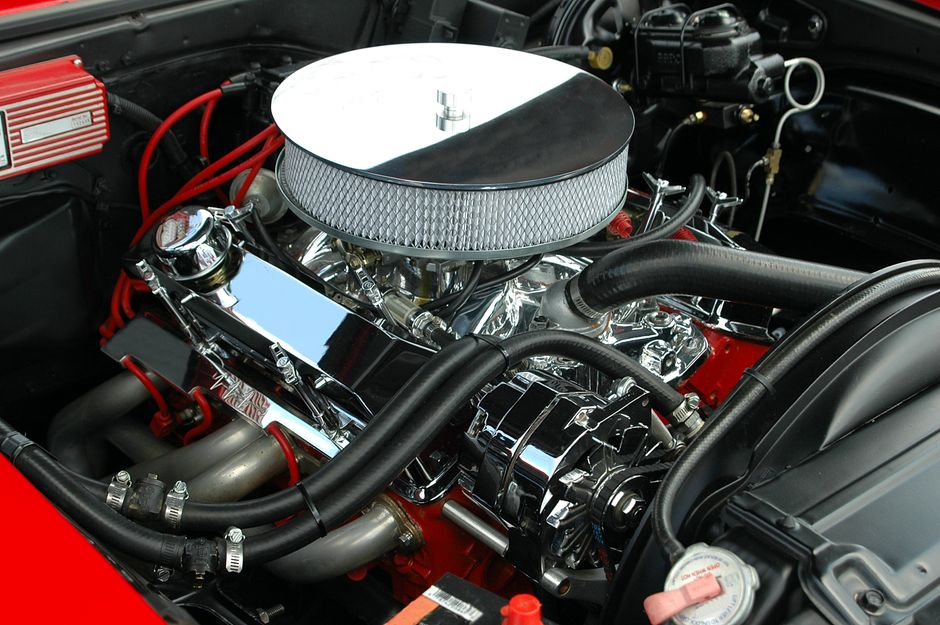

How to Check and Replace Exhaust Valves Yourself

Photo: Pixabay / Pexels
Introduction
Exhaust valves, or exhaust valves as they are commonly known, are critical components of your vehicle’s engine. They ensure that the exhaust gases are properly expelled from the cylinders, maintaining engine efficiency and performance. Over time, these valves can wear out or become damaged, leading to reduced engine performance and potential damage. This article will guide you through the process of checking and, if necessary, replacing your exhaust valves yourself.
Tools and Materials Needed
- Wrench set
- Socket set
- Pry bar
- Torque wrench
- Replacement exhaust valves
- Sealing compound
- Gloves and protective eyewear
Step-by-Step Guide
1. Safety First
Photo: Click Jeth / Pexels
Before you begin, ensure your safety by wearing gloves and protective eyewear. The valves operate at high temperatures, so handle them with care. Additionally, ensure the engine is cool and the vehicle is on a flat surface.
2. Locate the Exhaust Valves
Exhaust valves are typically located on the cylinder head, near the exhaust ports. They are usually covered by a valve cover, which you will need to remove. Consult your vehicle’s service manual to locate the valves and the specific parts needed for your vehicle.
3. Remove the Valve Cover
Using a wrench or socket, remove the bolts securing the valve cover to the cylinder head. Carefully lift the cover and set it aside. Inspect the area for any debris or residual material that might interfere with your work.
4. Inspect the Exhaust Valves
With the valve cover removed, inspect the exhaust valves for wear, corrosion, or damage. Gently move the valves back and forth to check their operation. If you notice any wear or damage, it’s time to replace them.
5. Clean the Valves and Seating Surfaces
Use a clean, dry cloth to clean the valve guides and seats. This will help ensure a proper seal between the valves and the head. If necessary, use a valve cleaning compound to clean the valves and seats thoroughly.
6. Replace the Exhaust Valves
Remove the damaged valves by using a pry bar to carefully lift them from their seats. Take note of the old seals and any other components that need to be replaced. Insert the new exhaust valves, ensuring they are seated properly. Apply a small amount of sealing compound to the seats and valves to ensure a tight seal.
7. Reinstall the Valve Cover
Once the new valves are installed, carefully reinstall the valve cover, ensuring that all bolts are securely tightened to the manufacturer’s specified torque. Use a torque wrench to achieve the correct torque setting, as over-tightening can damage the parts.
8. Final Inspection and Testing
Recheck the valves for proper operation and ensure that the engine is running smoothly. If you notice any issues, such as backfiring or reduced performance, repeat the process or seek professional assistance.
Conclusion
Replacing your exhaust valves yourself can save you a significant amount of money and give you the satisfaction of performing a critical maintenance task. However, it is essential to approach this task with care and ensure you have the necessary tools and knowledge. If you are unsure about any step, consider seeking professional assistance to avoid potential damage to your engine.
Recommended products
As an Amazon Associate, I earn from qualifying purchases.